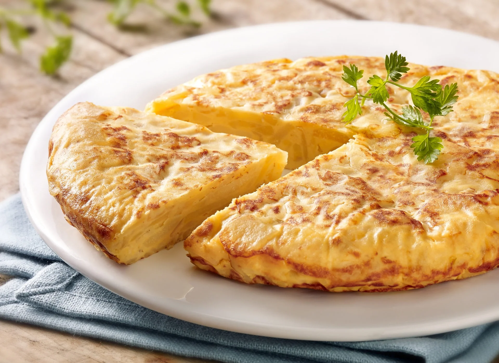

Tortilla española

Descripción
La tortilla española es un plato icónico que combina una textura suave y jugosa en su interior con una capa exterior ligeramente dorada. Su sabor delicado, lleno de matices, la convierte en una opción reconfortante y versátil, disfrutada tanto fría como caliente.
Este plato, típico de la gastronomía española, destaca por su sencillez y a la vez por su capacidad de ser el centro de cualquier comida, ya sea como aperitivo, plato principal o tapa. Su aspecto redondo y dorado es inconfundible, y su textura densa la hace sustanciosa y sabrosa en cada bocado.
Ingredientes
-
Papas (patatas)
-
Huevos
-
Sal
-
Aceite de oliva
Opcionalmente, podrías añadir:
Pasos básicos:
-
Pela y corta las papas en rodajas finas o cubos pequeños.
-
Calienta aceite de oliva en una sartén a fuego medio y añade las papas, cocinándolas hasta que estén tiernas y ligeramente doradas.
-
Escurre las papas del exceso de aceite y resérvalas.
-
Bate los huevos en un bol con una pizca de sal.
-
Mezcla las papas con los huevos batidos, asegurándote de que estén bien cubiertas.
-
Vierte la mezcla en la sartén caliente y cocina a fuego medio-bajo, moviendo suavemente los bordes para que se cocine de manera uniforme.
-
Da la vuelta a la tortilla con la ayuda de un plato, y cocínala por el otro lado hasta que esté dorada y firme.
-
Retira del fuego y sirve la tortilla cuando esté dorada y cocida al gusto.
Pasos opcionales (si usas ingredientes adicionales):
-
Cebolla: Puedes añadir cebolla picada y sofreírla con las papas para darle un toque dulce y más sabor.
-
Pimiento o ajo: Si deseas, puedes agregar pimiento o ajo picado junto con las papas para añadir más profundidad de sabor a la tortilla.
Estos ingredientes opcionales le aportan más sabor y variedad, pero la tortilla sigue siendo deliciosa en su forma más simple.